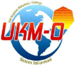

MACO

UKM-O Macho adalah ukm yang bergerak dibidang olahraga. Ukm ini memiliki 5 bidang olahraga yaitu Sepak Bola, Futsal, Basket, Volly, Badminton.UKM-O Macho pertama kali cabang olahraganya cuma futsal namanya SIFUT dibentuk tahun 2009 sama pak beni. Juli tahun 2011 baru diresmikan UKMO, cabangnya ada basket futsal badminton.
Tahun2 selanjutnya cabornya nambah terus dan smpek skrg ada 6 cabor (Futsal, basket, badminton, tenis meja, voli, sepakbola) tp untuk tahun ini sepak bola masih fakum. 1Nama UKMO MACO diresmikan tgl 22 april 2016 pas kepengurusan mas bagus akbar . Macho singkatan dari men sana in corpore sano yang artinya di dalam tubuh yg kuat terdapat jiwa yg sehat.